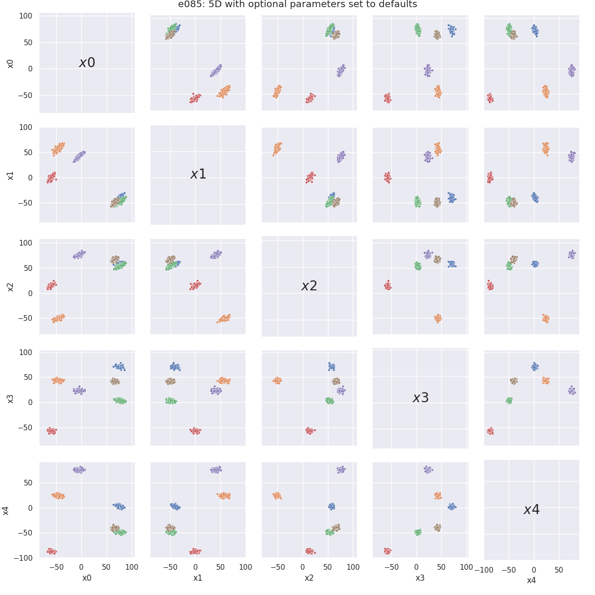
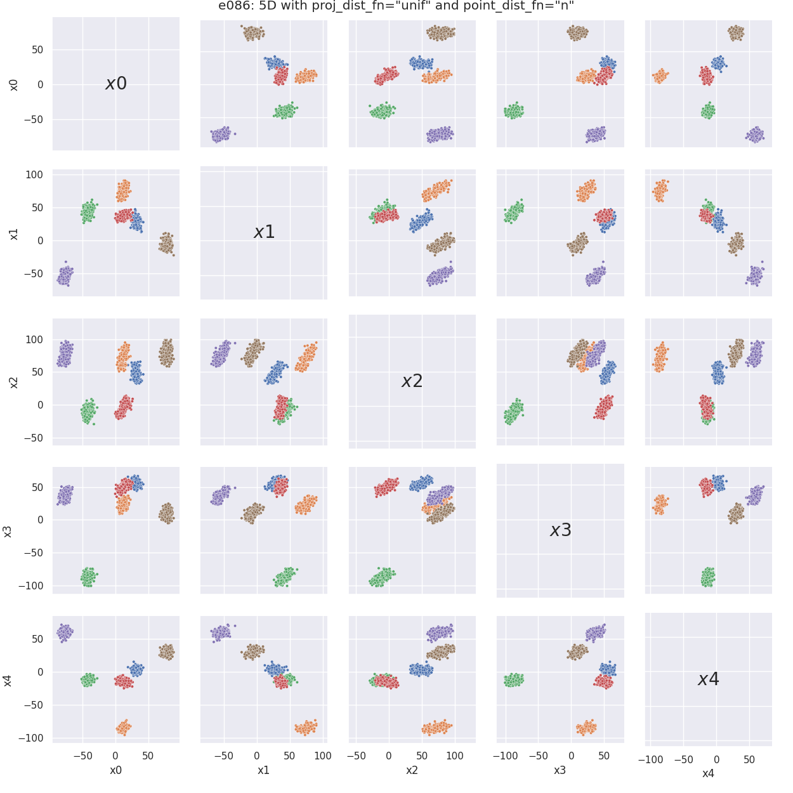
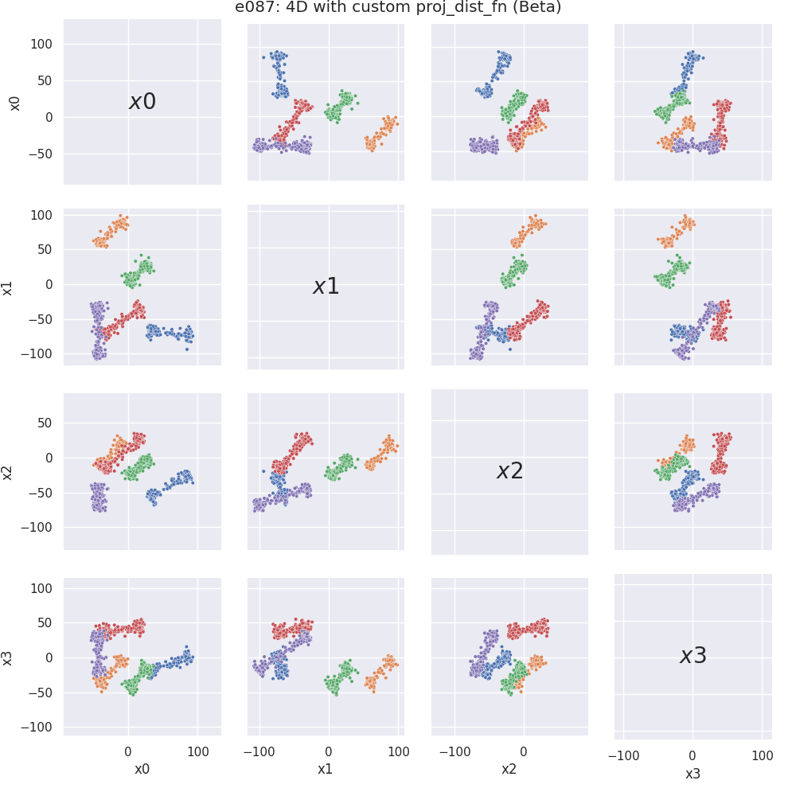

Note
Click here to download the full example code
Examples in nD¶
This section contains several examples on how to generate nD (n > 3) data with
pyclugen. To run the examples we first need to import the
clugen() function:
To make the examples exactly reproducible we'll import a random number
generator from NumPy and pass it as a parameter to
clugen(). We'll also create a small helper function
for providing us a brand new seeded generator:
import numpy as np
from numpy.random import PCG64, Generator
def rng(seed):
return Generator(PCG64(seed))
To plot these examples we use the plot_examples_nd
function:
5D example with default optional arguments¶

5D example with proj_dist_fn = "unif" and point_dist_fn = "n"¶
e83 = clugen(nd, 6, 1500, [0.1, 0.3, 0.5, 0.3, 0.1], np.pi / 12, 30 * np.ones(nd), 35, 5, 3.5,
proj_dist_fn="unif", point_dist_fn="n", rng=rng(seed))

4D example with custom projection placement using the Beta distribution¶
# Custom proj_dist_fn: point projections placed using the Beta distribution
def proj_beta(len, n, rng):
return len * rng.beta(0.1, 0.1, size=n) - len / 2
e84 = clugen(nd, 5, 1500, np.ones(nd), np.pi / 6, 30 * np.ones(nd), 60, 15, 6, rng=rng(seed),
proj_dist_fn=proj_beta)

Total running time of the script: ( 0 minutes 8.010 seconds)
Download Python source code: plot_4_nd_examples.py